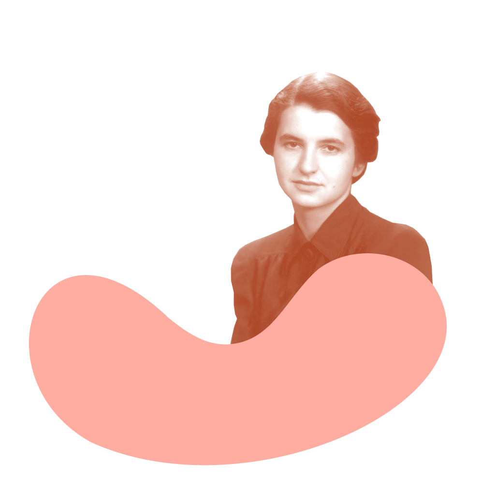

Rosalind
Franklin

In 1951 Franklin joined the Biophysical Laboratory at King’s College, London, as a research fellow. She soon discovered the density of DNA and, more importantly, established that the molecule existed in a helical conformation. Her work to make clearer X-ray patterns of DNA molecules laid the foundation for James Watson and Francis Crick to suggest in 1953 that the structure of DNA is a double-helix polymer, a spiral consisting of two DNA strands wound around each other.
Franklin moved to Birkbeck College where, ironically, she began working on the structure of the tobacco mosaic virus, building on research that Watson had done before his work on DNA. During the next few years she did some of the best and most important work of her life, and she traveled the world talking about coal and virus structure. However, just as her career was peaking, it was cut tragically short when she died of ovarian cancer at age 37.